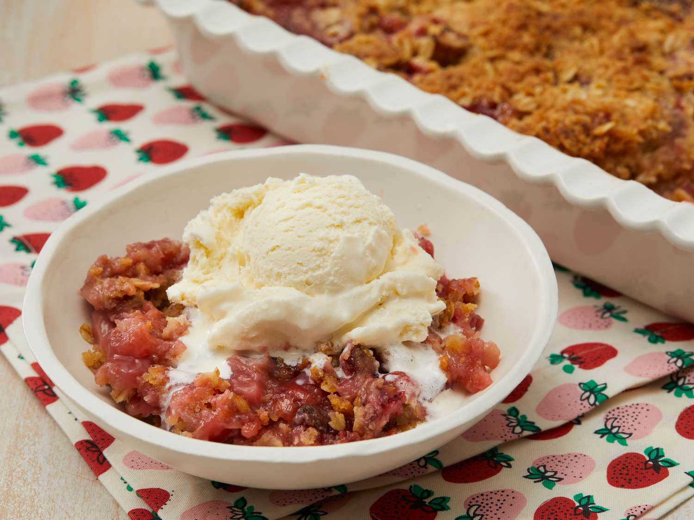

Strawberry Rhubarb Crisp

Description
This strawberry rhubarb crisp has a sweet and tart layer of soft fruit with a crispy oat topping. This dessert is
perfect for those who wonder what to do with that big rhubarb plant in the garden. This recipe is your answer — it will
have you coming back for more!
Ingredients
Fruit Layer:
- 3 cups sliced fresh straberries
- 3 cups diced rhubarb
- 1 cup white sugar
- 3 tablespoons all-purpose flour
Crunch Topping:
- 1 1/2 cups all-purpose flour
- 1 cup packed brown sugar
- 1 cup rolled oats
- 1 cup butter
Directions
- Gather all ingredients.
- Preheat oven to 375 degrees F.
- To make the fruit layer: Mix strawberries, rhubarb, white sugar, and flour together in a large bowl. Place the mixture in a 9"x13" baking dish.
- To make the crisp topping: Combine 1 1/2 cups flour, brown sugar, oats, and butter and mix until crumbly. You may want to use a pastry cutter for this. Sprinkle on top of the rhubarb and strawberry layer.
- Bake in the preheated oven until crisp and lightly browned, about 45 minutes.
Home